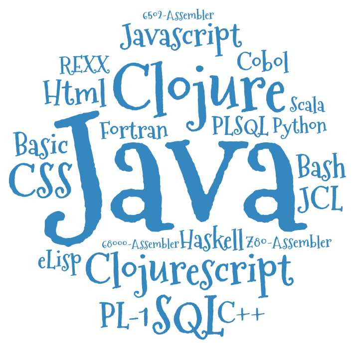
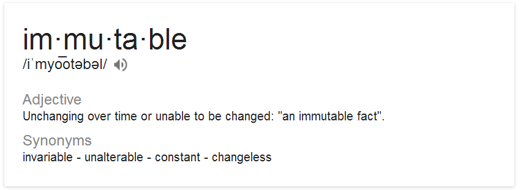
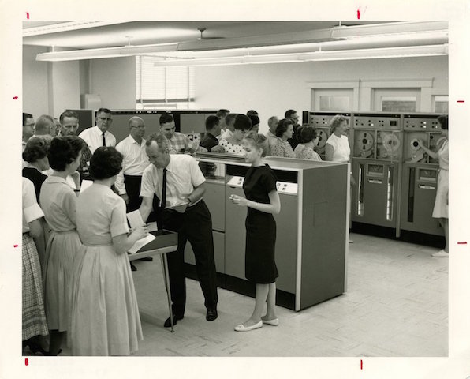
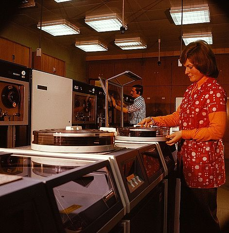
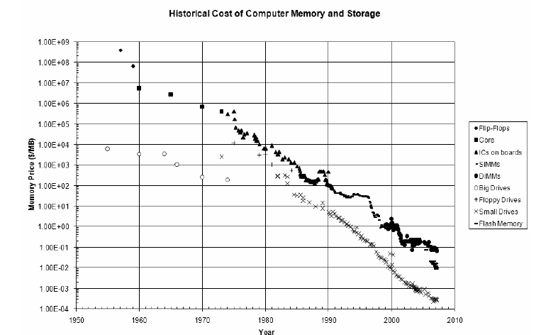
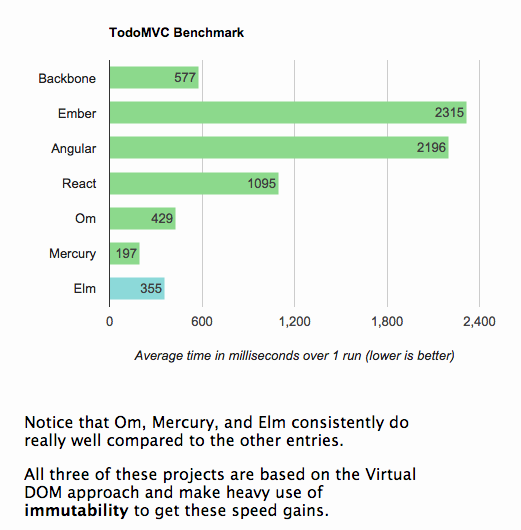

The Never Changing Face of Immutability
Chris Howe-Jones
19th July 2016
Who am I?
Name: Chris Howe-Jones
Job Title: Technical Navigator
Twitter: @agile_geek
Github: github.com/chrishowejones
Blog: chrishowejones.wordpress.com
Credentials
Languages

Employers

Roles

Warning!!
- There will be a Lisp!
- There will be Entomology!
- There will be History!
The Never Changing Face of Immutability

History Lesson

Once upon a time..

Book Keeping
- List of entries in a ledger
- No 'crossing out'!
Dawn of Computing

- Math
- Transient storage
60's-90's

- Spot the expense/value?
- Memory
- Tape
- Disk
And..
In place computing

- Update data in place
- Reuse expensive real estate
RDBMS

- Data updated
- Values overwritten
- Reuse memory and disk
Result?
In place oriented programming (PLOP) relies on…
Mutation
Which leads to..

Complect

- Complecting Identity & Value
- Especially RDBMS, OOP
- Pessimistic concurrency strategies
21st Century

Spot the expense/value?
- Developers, Software
Cheap resources: SSD/Disk, Memory, CPU
What's changed?

- Computing capacity has increased by a million fold!
Immutability (and values) to the rescue!

Values
- Values are generic
- Values are easy to fabricate
- Drive reuse
- Values aggregate to values
- Distributable
Isn't copying values inefficient?
- Structural sharing
- For example in Clojure:
- persistent bit-partitioned vector trie
- 32 node tries
- Wide shallow trees
What does it look like?
- Immutable by default
- Explicit state change
- Database as a value
ClojureScript on the client
(def initial-state
{:event {:event/name "" :event/speaker ""} :server-state nil})
(defn- event-form
[ui-channel {:keys [event/name event/speaker] :as event}]
[:table.table
[:tr
[:td [:label "Event name:"]]
[:td [:input {:type :text
:placeholder "Event name..."
:defaultValue event/name
:on-change (send-value! ui-channel m/->ChangeEventName)}]]]
[:tr
[:td [:label "Speaker:"]]
[:td [:input {:type :text
:placeholder "Speaker..."
:defaultValue event/speaker
:on-change (send-value! ui-channel m/->ChangeEventSpeaker)}]]]
[:tr
[:td
[:button.btn.btn-success
{:on-click (send! ui-channel (m/->CreateEvent))}
"Go"]]]])
(defrecord ChangeEventName [name])
(defrecord ChangeEventSpeaker [speaker])
(defrecord CreateEvent [event])
(defrecord CreateEventResults [body])
(extend-protocol Message
m/ChangeEventName
(process-message [{:keys [name]} app]
(assoc-in app [:event :event/name] name)))
;; redacted for clarity ...
(extend-protocol EventSource
m/CreateEvent
(watch-channels [_ {:keys [event]
:as app}]
#{(rest/create-event event)}))
(extend-protocol Message
m/CreateEventResults
(process-message [response app]
(assoc app :server-state (-> response :body))))
Efficiency

Clojure on the server
(defn- handle-query
[db-conn]
(fn [{req-body :body-params}]
{:body (case (:type req-body)
:get-events (data/get-events db-conn)
:create-event (data/create-entity db-conn (:txn-data req-body)))}))
(defn app [dbconn]
(-> (routes
(GET "/" [] home-page)
(POST "/q" []
(handle-query dbconn))
(resources "/"))
(wrap-restful-format :formats [:edn :transit-json])
(rmd/wrap-defaults (-> rmd/site-defaults
(assoc-in [:security :anti-forgery] false)))))
Datomic for Data

- App get's its own query, comms, memory- Each App is a peer
Database as a value
| Entity | Attribute | Value | Time |
|---|---|---|---|
| Fiona | likes | Ruby | 01/06/2015 |
| Dave | likes | Haskell | 25/09/2015 |
| Fiona | likes | Clojure | 15/12/2015 |
- Effectively DB is local
- Datalog query language
[:find ?e :where [?e :likes “Clojure”]]
Schema
;;event
{
:db/id #db/id[:db.part/db]
:db/ident :event/name
:db/cardinality :db.cardinality/one
:db/valueType :db.type/string
:db/unique :db.unique/identity
:db.install/_attribute :db.part/db
}
{
:db/id #db/id[:db.part/db]
:db/ident :event/description
:db/cardinality :db.cardinality/one
:db/valueType :db.type/string
:db.install/_attribute :db.part/db
}
{
:db/id #db/id[:db.part/db]
:db/ident :event/location
:db/cardinality :db.cardinality/one
:db/valueType :db.type/ref
:db.install/_attribute :db.part/db
}
...
;;location
{
:db/id #db/id[:db.part/db]
:db/ident :location/postCode
:db/cardinality :db.cardinality/one
:db/valueType :db.type/string
:db.install/_attribute :db.part/db
}
{
:db/id #db/id[:db.part/db]
:db/ident :location/description
:db/cardinality :db.cardinality/one
:db/valueType :db.type/string
:db.install/_attribute :db.part/db
}
...
Persistence
(defn create-entity
"Takes transaction data and returns the resolved tempid"
[conn tx-data]
(let [had-id (contains? tx-data ":db/id")
data-with-id (if had-id
tx-data
(assoc tx-data :db/id #db/id[:db.part/user -1000001]))
tx @(d/transact conn [data-with-id])]
(if had-id (tx-data ":db/id")
(d/resolve-tempid (d/db conn) (:tempids tx)
(d/tempid :db.part/user -1000001)))))
(defn get-events [db]
(d/pull-many db [:*]
(->> (d/q '{:find [?event-id]
:where [[?event-id :event/name]]}
db)
(map first))))
Conclusion?

- Immutability simplifies
- State as function call stack
- Mostly pure functions
- Easier to test & reason about
- Time as first class concept
- Easier to distribute
Resources
- Rich Hickey talks -
- 'The Value of Values'
- 'The Language of the System'
- 'Simple Made Easy'
- 'Clojure, Made Simple'
- 'The Database as a Value'
- 'The Language of Systems'
- Moseley and Marks - Out of the Tar Pit
- Kris Jenkins
- 'ClojureScript - Architecting for Scale' (Clojure eXchange 2015)